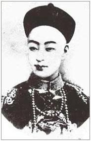

很想為譚嗣同先生寫一篇文章，你猜他是誰人的轉世？這位維新志士，頸上血痕猶在，以他的頭顱，喚醒千萬中國人的心！他的名句：四萬萬人齊下淚，天涯何處是神州！正是當時中國晚清時候每位老百姓內心中想說的話．譚嗣同先生是一位佛教徒，曾於南京聽從當時佛教大居士楊仁山先生說法；他的思想、胸襟、抱負，盡在他所撰著的仁學一書當中．仁學一書，可能現今的中學生大學生亦未必看得懂，你有沒有興趣研讀？究竟是能力問題，還是興趣問題？如果兩個問題都存在，你就不必告訴我了．
秋瑾先生說：勸君莫惜頭顱貴，贏得中華節烈名！的確，研究晚清至民國時候的近代史，出現過很多仁義節氣之人，鑒湖女俠秋瑾先生、譚嗣同先生等變法志士，都是中國人一貫內在精神的形象化及代表之一．現在是金錢時代，以頭顱換仁義，可能已成為新一代的笑話；但譚嗣同先生正氣所遺留下的人體生命能場，仍在京城菜市口他當日行刑的地方迴盪不散！
英雄自有真肝膽，重情俠客心太硬！譚嗣同先生的劍術亦相當不錯，正如梁羽生先生在萍蹤俠影錄中所寫的男主角張丹楓一樣，譚嗣同先生亦確實是一位不世出的俠客，是一個：亦狂亦俠真名士、能哭能歌邁流俗之人！為甚麼能哭能歌？能哭者，哭中國山河破碎，無人救挽；能歌者，因為先生所擁有的一張殘雷琴，亦彈得迂迴跌盪，絃音細膩勻密；在沉曠的琴聲中，隱隱透出他的心聲、他的詩句：世間無物抵春愁，合向蒼冥一哭休．．．．．
其實他可以不死，大可學康南海及梁任公二先生一樣先留有用之身，然後再圖後計．但他心腸太硬，為了民族、為了百姓日後的福祉，寧願為仁義而犧牲．但是再硬的頭顱，亦難敵刀斧交加！
知己喜得有人，相交惜太暫！這就是戊戌六君子，相逢恨晚！
獨自返，茫茫路，路上有你不怕孤單．．．．．．．
譚嗣同先生，正是千山獨行，不必相送的人物；他有仁義和正氣相伴，如同文天祥先生遺書所說的一樣：孔曰成仁，孟曰取義；惟其義盡，所以仁至；讀聖賢書，所學何事，而今以後，庶幾無愧！他們身後的路並不空虛及孤單，如正氣歌所言，他們亦是：風簷展書讀，以古道照顏色的人物．
真影 譚嗣同先生故居－瀏陽會館
文：先生琴聲淒洒寥索，抑否悵望中原板盪，無限消失？
譚：非也！吾非後主，無痛擁江山之意，惟嘆民黎，借琴抒寄．．．．．
文：先生泰可免死？
譚：死是靈生，何足懼哉！吾佛度生，恆沙骨藉，此去復來，難於疇算．
文：古人胸次，可學之哉？願垂鈞教．
譚：非弗能學，不一世可盡之矣．
文：菩薩度生如斯，然火宅飛花，千迴百轉，難可一貫！
譚：故拙論微言，以申仁旨；仁之至極，菩提至已．
文：恭閱洋文，捧心慶快；佛之於孔，高論若是．
譚：敝屣之書，只慰平生；今歲之人，不足觀矣．
文：先生蘊玉之才，設使佐力龍庭，河清指待．
譚：豈敢如言，康梁二師，足堪誇之！
文：文殊師利維摩詰，隨順重開大道場，非管墨可表吾感！
譚：噫！拙句得君心，念君名字細沉吟．．．．．．．
文：文殊師利維摩詰，獨步娑婆爍古今．．．．．．．
譚：太息時人都誤了，白雪流水罔知音．
文：二師早成三世佛，微軀拜倒玉蓮裙．
譚：前生後世，悉乎？
文：一自優曇銷隱後，法花重認記前塵．
譚：幾回彰盡他人寶，多年埋了自家珍．
文：曠劫法明足下士，空世龍尊座上人．
譚：維摩一默驚天地，金粟如來最後身．
文：拜謝隆情，乞憐乞恕！
譚：本非塵中物，問訊眼前人．．．．．．．
文：焉敢？花嚴菩薩忘苦樂，引刀一快救蒼生．
譚：金劍沉埋重出鞘，穿林落葉慰良民．
．．．．．．．．．．．．．．．．．．．．．．．．．．．．．．．
文：好一派寒光紫電，氣隨劍躍，如舞虹蜺．
譚：隨心揮洒，正是佛家所宗．
文：干將莫邪，世所無匹！如此快厲青霜，王俠教乎？
譚：大刀王五俠，如管如鮑，春樹暮雲，能弗憶乎！
文：人亡劍在如何？
譚：無二別！且道人牛一句？
文：龐蘊沉寶，棄即不棄！
譚：無愧一場相識．
文：此際神交，倥�一別；或來朝夢會，辭謝高誼！
譚：僕之魂魄，永護龍黃．
文：叩別先生．．．．．．．．．．．．．．．．．．．．．．．
題江標（建霞）修書圖
瀏陽譚嗣同壯飛 撰著
新會文殊摩詰 釋義
三界惟心不等閒 聖人糟粕亦如山
眾生絕頂聰明處 只在虛無縹緲間
佛陀所說的欲界色界無色界三界，都是惟心所造；心念一動，能生世界有情無情，山河大地，絕不是等閒功夫可造成的．是以凡夫起心動念，亦不可等閒視之，亦都要合乎於正道；若心行於邪道，最終必將害己害人，因果循環，自招苦果！
所謂聖人的境界，亦有層次等級之分；若還沒有修煉圓滿至於佛境，就算是菩薩果位的聖者，都會有不完善的地方．若再等而下之的話，一般世人所認為的聖人，有的可以是真才實學，有時只是徒具虛名，其實內在根本沒有任何德行可言，惟是眾生不察，讓他們有機會可欺世盜名而已！假使真聖人修煉還未圓滿，例如在思念上和行為上，將不完善的地方加起來，亦有如山岳之高．
可嘆眾生認為自己都是絕頂聰明，覺得比別人甚麼都勝一籌，每每存有計度及較量的心，這種執念，其實都是虛無縹緲，是從相對層面比較出來所生起的幻象，沒有實質可言．但往往由於這種好勝的執念，令眾生不能自拔，作更多的惡業，毀了寶貴的真修！
金陵聽說法三首
火劫冰期接混茫 小之淩谷巨蒼桑
有形潛逐人心改 創世誰憐我主忙
明日觀身已非昨 微生歸命向何方
文殊師利維摩詰 隨順重開大道場
文殊師利維摩詰 一一雲中自出音
各各分途戒定慧 亭亭三界去來今
乾坤尚顯易何有 神鬼不知心所深
願為恆河留莂偈 依然建業暮鐘沉
而為上首普觀察 乘佛威神說偈言
一任血田賣人子 獨從性海救靈魂
大地山河今領取 菴摩羅果掌中論
本文參考圖像

梁啟超先生 光緒皇帝 康有為先生
說明：文中對話內容為小說體裁，並非真實．